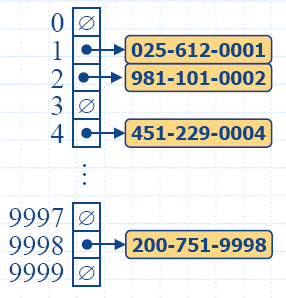
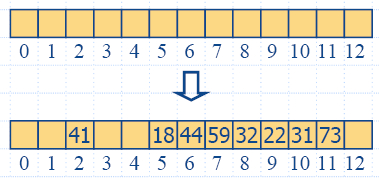
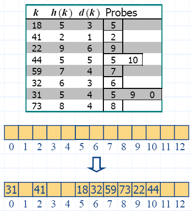

| Function |
Input |
Output |
Description |
| size() |
- |
Integer |
Return the
number of items in D. |
| isEmpty() |
- |
Boolean |
Test whether D is empty. |
| elements() |
- |
Iterator of
objects (elements) |
Returns the
elements stored in D. |
| keys() |
- |
Iterator of objects (keys) | Returns the keys stored in D. |
| find(k) |
Object (key) | Position |
If D contain an item with key equal to
k, then return the
position of such an item. If not, a null position is returned. |
| findAll(k) |
Object (key) | Iterator of Positions | Return an
iterator of positions
for all items whose key equals k. |
| insertItem(k,e) |
Objects k (key) and e (element) | - |
Insert an item
with element e and key k into D. |
| removeElement(k) |
Object (key) |
- |
Remove an item
with key equal to k from D. An error condition occurs if D has no such item. |
| removeAllElements(k) |
Object (key) | - |
Remove the items with key equal to k from D. |
| Operation |
Output |
Dictionary |
| insertItem(5,A) insertItem(7,B) insertItem(2,C) insertItem(8,D) insertItem(2,E) find(7) find(4) find(2) findAll(2) size() removeElement(5) removeElement(5) removeAllElements(2) find(2) findAll(2) |
- - - - - p(B) "null" p(C) or p(E) p(C),p(E) 5 - "error" - "null" "empty iterator" |
{(5,A)} {(5,A),(7,B)} {(5,A),(7,B),(2,C)} {(5,A),(7,B),(2,C),(8,D)} {(5,A),(7,B),(2,C),(8,D),(2,E)} {(5,A),(7,B),(2,C),(8,D),(2,E)} {(5,A),(7,B),(2,C),(8,D),(2,E)} {(5,A),(7,B),(2,C),(8,D),(2,E)} {(5,A),(7,B),(2,C),(8,D),(2,E)} {(5,A),(7,B),(2,C),(8,D),(2,E)} {(7,B),(2,C),(8,D),(2,E)} {(7,B),(2,C),(8,D),(2,E)} {(7,B),(8,D)} {(7,B),(8,D)} {(7,B),(8,D)} |
| Operation |
Input |
Output |
Description |
| element() | - |
Object (element) | Return a
reference to the
element of the associated item. |
| key() | - |
Object (key) | Return a constant reference to the key of the associated item. |
| isNull() | - |
Boolean |
Determine if
this is a null
position. |
|  |
|
int hashCode(int x)64-bit integer if we have 32-bit integer hash function
{ return x; }
int hashCode(long x)Polynomial Hash Codes
{ typedef unsigned long ulong;
return hashCode(static_cast<int>(static_cast<ulong>(x) >> 32)
+ static_cast<int>(x));
}
Experimental Resultsint hashCode(const char* p, int len) // hash a character array
{ unsigned int h = 0;
for (int i = 0; i < len; i++)
{ h = (h << 5)|(h >> 27); // 5-bit cyclic shift
h += (unsigned int)p[i]; // add in next character
}
return hashCode(int(h));
}
| Shift |
Collisions
Total |
Collisions Max |
| 0 |
23739 |
86 |
| 1 |
10517 |
21 |
| 5 |
4 |
2 |
| 6 |
6 |
2 |
| 11 |
453 |
4 |
int hashCode(const double& x) // hash a double
{ int len = sizeof(x);
const char* p = reinterpret_cast<const char *>(&x);
return hashCode(p, len);
}
|  |
|
|
Algorithm
find(k) i ← h(k) p ← 0 repeat c ← A[i] if c = ∅ return Position(null) else if c.key() = k return Position(c) else i ← (i + 1) mod N p ← p + 1 until p = N return Position(null) |
|  |
|

| Function |
Log File |
Look-Up Table |
| size(),
isEmpty() |
O(1) |
O(1) |
| keys(),
elements() |
O(n) |
O(n) |
| find(key) |
O(n) |
O(log n) |
| findAll(key) |
Theta(n) |
O(log n + s) |
| insertItem(key,
element) |
O(1) |
O(n) |
| removeElement(key) |
O(n) |
O(n) |
| removeAllElements() |
Theta(n) | O(n) |